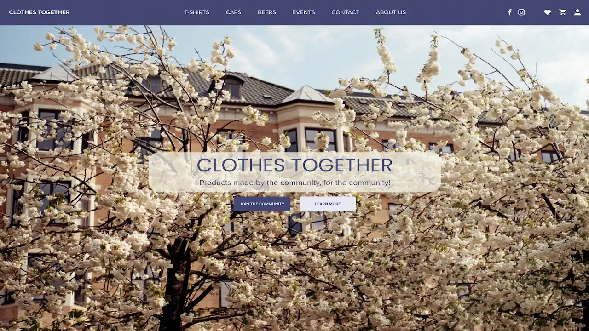
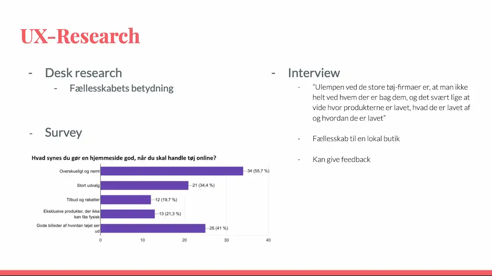
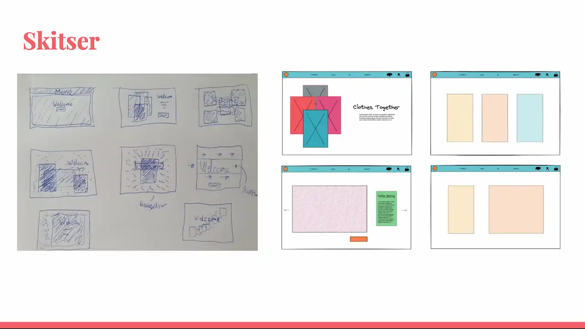
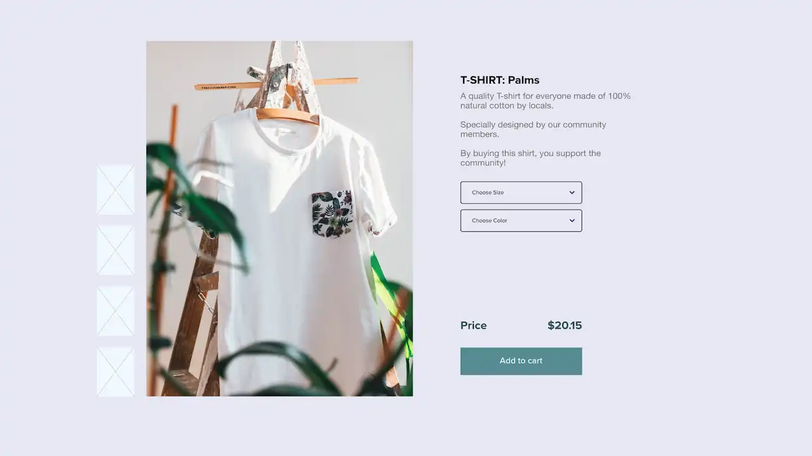

I tema 2 lærte vi at lave moodboards og arbejde i Adobe-XD med at opbygge en mock-up ud fra en udleveret wireframe. Jeg havde fået designstilen ”video-game design” som jeg fik realiseret igennem farver, ikoner og fonte. Hertil arbejde jeg med billede redigering i Photoshop, for bl.a. at give splashbilledet det passende udtryk. Ved at bruge HTML og CSS fik jeg implementeret alle elementerne ud fra mit eget styletile og gjort websitet responsivt.
Tema 2: Grundlæggende Web
Tema 3: Grundlæggende UX
Tema 3's projekt gik ud på at lave en prototype på en webshop som skulle sælge t-shirts, og herefter pitche den. Til det undersøgte jeg først hvordan og hvorfor forbrugere shopper på nettet. Dette gjorde jeg ved at indsamling kvalitativt og kvantitativt data, hvor jeg bl.a. endte med at finde frem til, at folk godt kunne tænke sig at vide hvem der står bag mange af de store tøj brands og savner derudover et fælleskab der. Ud fra den indsamlede data, endte jeg med at lave brandet ”Clothes Together” som havde USP'en at det er tøj lavet af fælleskabet for fælleskabet.




Tema 4: Grundlæggende Animation
Projektet i tema 4 gik ud på at man skulle designe et spil fra bunden ved hjælp af Java-script. Her startede jeg ud med nogle idegenereringsøvelser og lærte om grundprincipper indenfor design af figurere og spilelementer. Det var med til at jeg kunne begynde på mit spil ”Save Mars” som tog udgangspunkt i kawaii-stilen. Spillet handler om, at man skal rede marsboerne fra onde raketter fra Jorden. Dette gør man ved at klikke på dem inden de når Mars. Til at kode spillet benyttede jeg mig af et aktivitetsdiagram og State Machine diagram, hvilket gav et godt overblik og gjorde det nemmere at kode i Java-script.
Tema 5: Grundlæggende Indhold
Pilotprojekt
I første del af tema 5 skulle vi lave et 1 minuts interview om en persons passion. Her lærte vi at optage og efterbehandle video og lyd i henholdsvis Premiere Pro og Audition. Ligeledes arbejde vi også med at forberede interviewet og billederne ved at lave et storyboard, hvor vi gik ud fra 5 skuds reglen. Vi endte med (pga. sygdom) at interviewe mig, hvilket gav mig et indblik i hvordan det er at være den, der bliver interviewet.
Redesign
I anden del af tema 5 skulle vi i grupper lave et redesign af en virksomheds hjemmeside og optage videomateriale hertil. Vi var heldige at komme i kontakt med Louise Wilma, som er kropsterapeut. Her brugte vi meget af den viden, som vi fik igennem pilotvideo-projektet, til at forberede og optage video og b-roll materiale, samt efterbehandlingen af videoen og fotomaterialet. Dog nu med et fokus på at det nu skulle passe til hendes erhverv. Inden vi startede med at redesigne hendes hjemmeside, testede vi først den gamle hjemmeside for at se, hvad der fungerede og hvad der kunne forbedres. Herefter begyndte vi at planlægge og implementere vores eget design. Til denne proces brugte vi SCRUM-metoden, der igennem Trello-board, Burn-down-chart og Daily Scrummøde gjorde arbejdsforløbet meget nemmere.